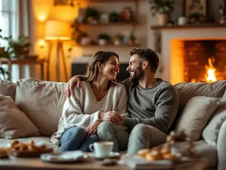

Premium Marriage Counseling
Building Stronger, Happier Marriages
Love Doctor creates a warm, practical space where couples learn how to communicate better, rebuild trust, and grow into a more peaceful, joyful partnership.


Warm guidance for couples ready to grow together intentionally.
About The Brand
A calm, modern place for couples to learn, heal, and thrive
Love Doctor blends compassionate counseling values with real-life tools that couples can use immediately. From communication habits to event experiences, every touchpoint is designed to help love feel safer, lighter, and more intentional.
Read more about the mission
Upcoming Events
Join meaningful experiences created for connection
These upcoming gatherings give couples a supportive environment to learn, ask questions, and leave with practical next steps for everyday marriage.

May 16, 2026
Heart-to-Heart Communication Masterclass
Learn listening habits, response tools, and conversation rhythms that lower tension at home.

June 6, 2026
Conflict Resolution for Loving Partners
Understand triggers, repair quickly after disagreement, and practice calmer ways to reconnect.

July 18, 2026
Trust and Tenderness Weekend Session
Build emotional safety through guided reflection, intimacy prompts, and trust-restoring exercises.
Past Events
A gallery of moments that brought couples closer
Love Doctor experiences are designed to feel safe, warm, and deeply intentional. These moments reflect how couples reconnect, learn, and grow inside beautifully guided spaces.
.webp)
Past Marriage Events / Gatherings
Meaningful rooms filled with reflection, laughter, and shared growth
These gatherings bring couples into a thoughtful environment where real stories, gentle teaching, and practical encouragement meet.

Rewind Connection Conversations
Honest dialogue that helps partners slow down and truly hear each other
Quiet, intentional conversations create room for tenderness, emotional safety, and the kind of listening that rebuilds closeness.
Interactive Guidance Circles
Supportive sessions where couples learn together in warm community
Guided circles make space for practical tools, shared insight, and reflective moments that help love feel lighter and more intentional.
.webp)
Founder-Led Mentorship Sessions
Founder-led moments shaped by wisdom, warmth, and clear guidance
Each mentorship experience is anchored in compassionate coaching that helps couples process challenges and move forward with confidence.
.webp)
Premium Safe Space for Healthy Conversations
Beautiful spaces that help couples feel calm, seen, and safe enough to open up
Soft atmosphere, intentional design, and a peaceful setting make it easier for couples to talk honestly and reconnect without pressure.